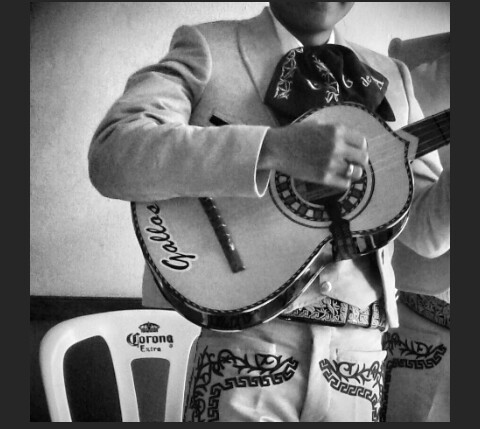
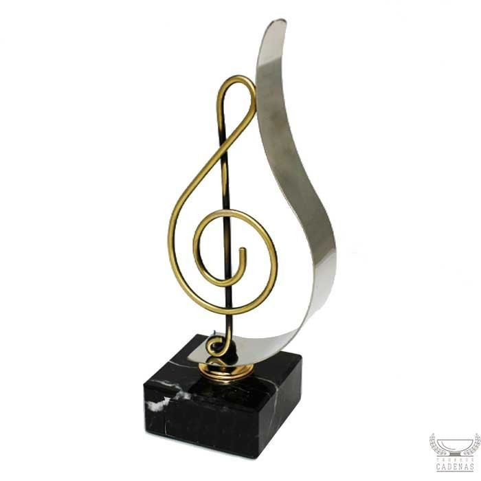
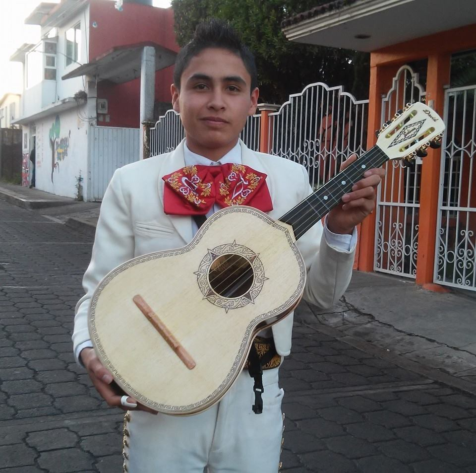

¿Quien Soy?

Me llamo Josue David Escalona Chavez, tengo 16 años de edad y estudio en el CBTis 86 "General Fransisco Villa". Soy originario de Hauchinango Puebla, nací el 21 de noviembre de 1999. Cuando tenia 8 meces de edad, aprendi a caminar y al mismo tiempo dije mi primer palabra y fue "agua". A los 4 años entre al kinder "Benjamin Franklin" en segundo grado pero me acendieron rapidamente a tercero. A los 6 años entre a la primaria "Carmen Serdan" y terminé a los 12 años. En seguida entre a la Telesecundaria "Alvaro Galvez y Fuentes, terminé de estudiar la secundaria a los 14 años. Despues entré al CBTis 86 donde curso el 4°semestre. Por las tardes estudio en el Conservatorio de Música aquí en Huauchinango, ahí curso el segundo semestre de inisiación y me estoy especializando en el intrumento de guitarra clásica. Por lo regular trabajo los fines de semana en un grupo de música mexicana y en el toco un instrumento que se llama "Vihuela" aunque tambien hay veces que toco la guitarra y el guitarrón.
Josue David!!
¿Cuales Son Mis Logros?

En el kinder destaque en segundo grado y por ello me acendieron a tercero, en la graduación del kinder la directora me eligió para decir las palabras de despedida en la ceremonia. En la primaria obtuve el primer lugar en primer grado, en segundo grado tuve el segundo lugar, en tercer grado el tercero. Despues en quinto grado tuve el tercer lugar de aprovevhamiento. Eh logrado también conseguir reconocimientos gracias a la música en la radio, programas culturales etc.
Josue David!!
¿Cuales Son Mis Pasatiempos?

Me gusta jugar futbol con mis amigos, me gusta tocar y practicar los intrumentos que se tocar para mejorar y perfeccionar mi técnica, también me gusta chatear con amigos y personas conocidas que viven lejos, me gusta ver videos de cualquier tema y me gusta mucho escuchar música.
Josue David!!o
¿Cuales Son Mis Aspiraciones?
Las aspiraciones que tengo para mi vida son demasiadas pero las mas importantes para mi es ser muy feliz junto ami familia y seres queridos asi como tambien me gustaria pertenecer aun grupo importante de musicos conlos cuales pasare muy buenos momentos ademas me gustaria ser un musico reconocido y se que lo lograre apesar de las adversidades y nunca me rendire asta conseguir lo que quiero.
Josue David!!